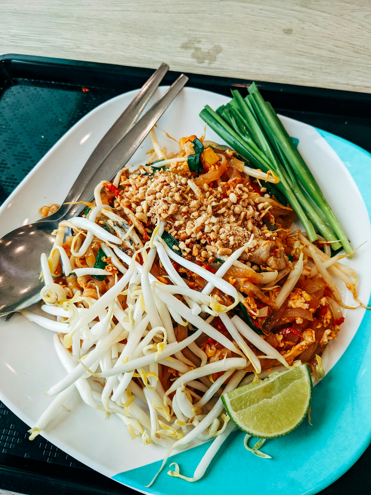
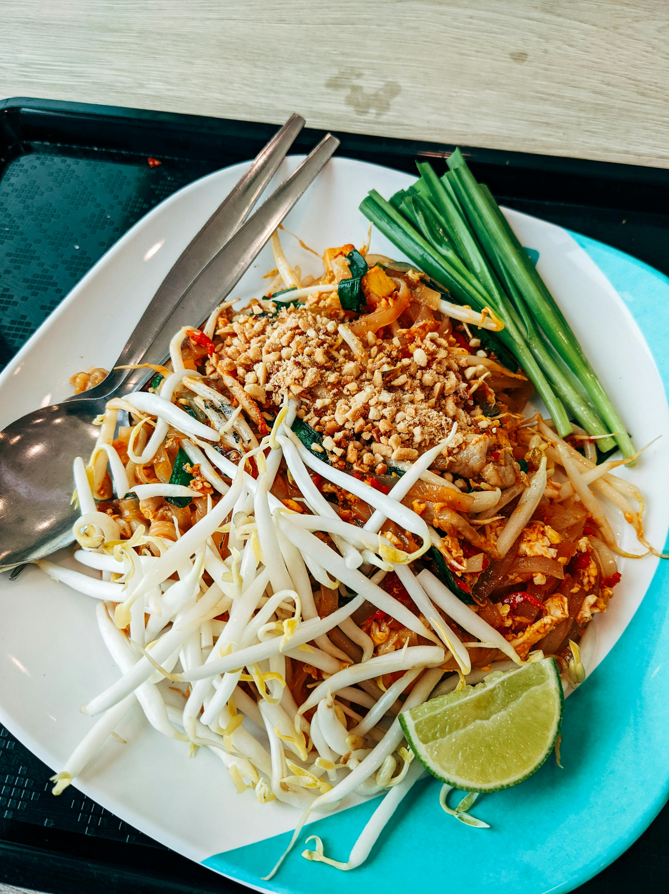

Introducing FlavorFusion, the ultimate destination for food enthusiasts to discover, share, and explore delicious recipes worldwide! Whether you're a seasoned chef or a passionate home cook, FlavorFusion offers diverse recipes to suit every palate and occasion.
 

Recipe Highlights
Recipe City?
Visit our Recipe City section and discover a world of delights. Simply register with your email to create a profile. You will stay informed about food trends and any community featured recipes by subscribing to our newsletter and dive into our Recipe City Promotions and Events. Whether you're in the mood for starters, main courses, desserts, or drinks, we've got everything you need.
Join Us
Be a part of our expanding community and celebrate the pleasure of cooking with us. Whether you're a chef or an enthusiastic home cook, FlavorFusion invites you to discover, share, and connect with food enthusiasts. Embark on your journey with us today!